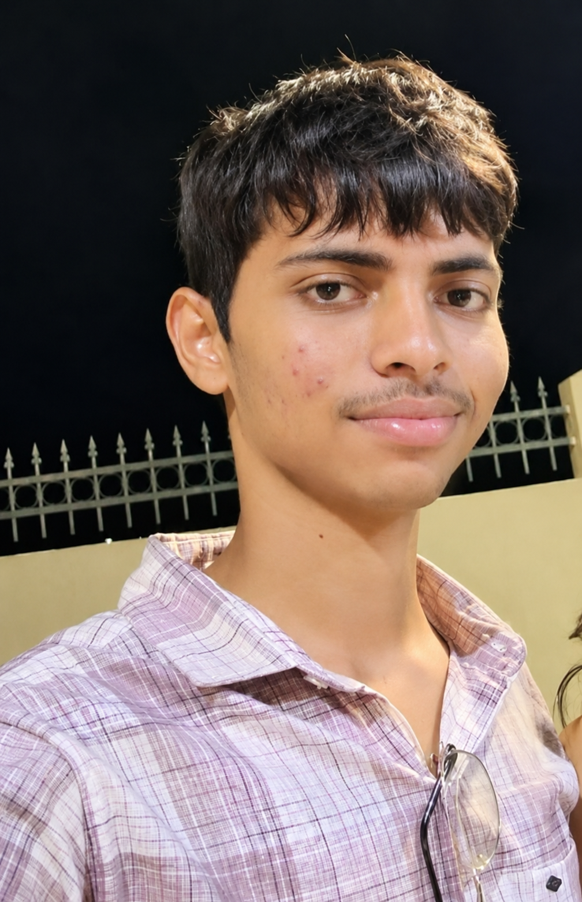

C
Programming
Building my foundation in programming and problem-solving.
A first-year CSE student at IIIT Raichur, learning to code, meeting new people, and figuring out how to build great things.
I'm MD Faisal Jamil, originally from Patna, Bihar, and currently studying Computer Science and Engineering at IIIT Raichur.
I enjoy making friends and learning new things. My goal? To become a successful developer — one step and one line of code at a time.

I'm at the beginning of my engineering journey. Right now, my focus is on understanding programming fundamentals, exploring how websites work, and making the most of college life. I don't have a long list of projects yet — this portfolio is a place to start and grow.
Two starting points, a lot more to explore. I’m keeping this section focused on the skills I’m actually learning, rather than filling it with tools I haven’t used.
Building my foundation in programming and problem-solving.
Learning how the web is structured, one element at a time.
I’m a first-year Computer Science and Engineering student. Here’s what this stage of my journey looks like — where I come from, what I’m learning, and where I hope to go.
My hometown and a part of my story. I enjoy connecting with people and making new friends wherever I go.
Studying CSE and building a foundation in C programming and HTML while discovering more about the world of technology.
My ambition is to become a successful developer. I know that takes practice, patience, and a lot of learning.
NOT AN EXPERT YET. JUST SOMEONE WHO'S EXCITED TO LEARN AND SEE WHERE IT GOES. ↗
A favorite way to spend time away from a screen.
For the everyday moments that need a soundtrack.
I enjoy taking a break with a good movie.
Meeting people and spending time together matters to me.
Whether it's about coding, football, movies, or just making a new friend — feel free to reach out.